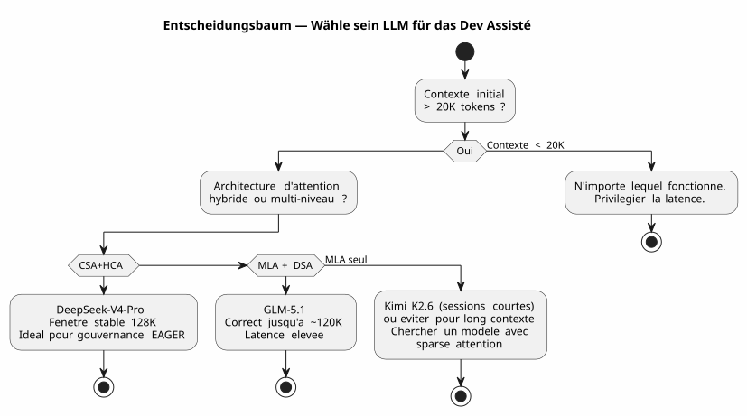

DeepSeek-V4-Pro, Kimi K2.6, GLM-5.1: Drei LLMs im Test des Vibe Coding Long Kontext
Publié le 28 April 2026
- Kontext: kein Prüfstand, sondern eine Baustelle
- Meine Testumgebung
- Das Bewertungsraster
- Runde 1: Kimi K2.6 – Der Fehlstart
- Runde 2: GLM-5.1 — Der ehrenhafte Kämpfer
- Round 3 : DeepSeek-V4-Pro — La Machine de Guerre
- Face-à-Face : Vergleichende Metriken
- Warum DeepSeek-V4-Pro in der Softwareentwicklung gewinnt
- Gelernte Lektionen: Wie man sein LLM für Vibe Coding auswählt
- Und was ist mit dem Governance-Agent in allem?
- Technische Quellen
- Conclusion : Die Wahl des Handwerkers
Der Krieg der LLMs wird auch im Terminal eines Entwicklers ausgetragen. Nicht auf sterilen akademischen Benchmarks. Im echten Leben: ein Prompt von 30.000 Tokens, eine Agenten-Governance in AsciiDoc, Gradle-Kotlin-DSL-Plugins zum Debuggen und Sessions, die sich über drei Wochen aneinanderreihen. Ich habe DeepSeek-V4-Pro, Kimi K2.6 und GLM-5.1 für Sie getestet. Hier ist das Urteil, belegt mit technischen Nachweisen.
- Tic
-
[]
Kontext: kein Prüfstand, sondern eine Baustelle
Vor drei Wochen arbeitete ich an`codebase-gradle`, Mein Meta-Build-System, das die YAML-Konfiguration von vier Projekten zentralisiert: ein PlantUML-README-Generator, ein AsciiDoc-Slide-Baukasten, eine statische JBake-Website und ein LLM-Chatbot. Der Opencode-Agent, regiert durch meine Methodik der Agenten-Dateien in AsciiDoc, lud jeweils zu Beginn einer Sitzung etwa 30K Tokens des EAGER-Kontexts – absolute Regeln, Backlog, Verlauf der letzten 10 Sitzungen.
Es ist auf diesem Gebiet, dass ich drei Modelle konfrontiert habe:
-
Kimi K2.6(Moonshot AI, 1T Parameter / 32B aktiviert, 256K maximaler Kontext, MLA) - GLM-5.1(Zhipu AI/Tsinghua, 744B params / DSA, 200K max. Kontext) - DeepSeek-V4-Pro(DeepSeek, 1,6 Billionen Parameter / 49B aktiviert, 1M Kontext max, CSA+HCA)
Alle werden über Ollama auf Cloud-Server bereitgestellt, alle im Thinking-Modus (Denkphase aktiviert). Die Herausforderung besteht darin, korrekten Code zu produzieren, die Kohärenz über lange Sitzungen aufrechtzuerhalten und Halluzinationen zu vermeiden, wenn der Kontext mehr als 80K Tokens überschreitet.
Meine Testumgebung
Failed to generate image: PlantUML preprocessing failed: [From <input> (line 11) ]
@startuml
skinparam backgroundColor #FEFEFE
skinparam defaultTextAlignment center
skinparam wrapWidth 220
title Testumgebung — Opencode-Sitzungen × 3 LLMs
left to right direction
package "🖥️ Entwickler-Terminal" #E8F5E9 {
rectangle "AGENT.adoc\n(Regeln, backlog)" as AG
rectangle "PROMPT_REPRISE
^^^^^
Syntax Error? (Assumed diagram type: component)
@startuml
skinparam backgroundColor #FEFEFE
skinparam defaultTextAlignment center
skinparam wrapWidth 220
title Testumgebung — Opencode-Sitzungen × 3 LLMs
left to right direction
package "🖥️ Entwickler-Terminal" #E8F5E9 {
rectangle "AGENT.adoc\n(Regeln, backlog)" as AG
rectangle "PROMPT_REPRISE
(Mission)" as PR
rectangle "INDEX.adoc
(roadmap)" as IDX
}
package "☁️ Ollama Cloud" #BBDEFB {
rectangle "DeepSeek-V4-Pro
1.6T / CSA+HCA" as DV4
rectangle "Kimi K2.6
1T / MLA" as KIMI
rectangle "GLM-5.1\n744B / MLA+DSA" as GLMG
}
package "�⚙️ Codebasis Gradle" #FFF9C4 {
folder "buildSrc/" {
file "codebase.kt"
file "readme.kt"
file "site.kt"
file "slider.kt"
file "snapshot.kt"
}
file "build.gradle.kts
(947 Zeilen)"
file "embeds.yml"
}
AG --> DV4 : Sessions 1-8 ✅
AG --> KIMI : Sessions 9-10 ⚠️
AG --> GLMG : Sessions 11-13 ⚠️
DV4 --> "Codebasis" : "TDD, Refaktorisierung,
Momentaufnahme"
KIMI --> "Codebasis" : "Verschlechterung
ab 60K Tokens"
note bottom of GLMG
Meilleur que Kimi
mais latence +
DSA moins robuste
que CSA+HCA
end note
@enduml
Jede Sitzung begann mit etwa 30K Tokens des EAGER-Kontextes :`AGENT.adoc`(287 Zeilen)PROMPT_REPRISE.adoc(51 Zeilen).agents/INDEX.adoc(218 Zeilen),LAZY_EAGER_ESSENTIALS.adoc(50 Zeilen). Der Kontext wuchs schnell mit den Austauschen — eine typische Sitzung von 10 Nachrichten fügte 15-20K Tokens zum kumulativen Prompt hinzu.
Das Bewertungsraster
Ich habe jedes Modell auf vier kritische Achsen für die assistierte Softwareentwicklung bewertet:
Achse |
Konkretes Kriterium |
Kohärenz langer Kontext |
Erinnert sich der Agent an die vor 40 Nachrichten vereinbarten Konventionen? |
Qualität des produzierten Codes |
Kompiliert der Code beim ersten Versuch? Hält er sich an die vorhandenen Muster? |
Architektonisches Denken |
Versteht der Agent die Beziehungen zwischen den Modulen, ohne dass ich sie ihm noch einmal erklären muss? |
Halluzinationsresistenz |
Ab wie vielen Tokens beginnt der Agent, erfundene APIs oder nicht existierende Klassen zu erfinden? |
Und eine hausgemachte synthetische Metrik: dasWiederaufnahmekoeffizient(wie viel Zeit ich damit verbringe, den Agenten zu korrigieren, anstatt mit ihm zu coden).
Runde 1: Kimi K2.6 – Der Fehlstart
Kimi K2.6 war meine erste Wahl. Seine Benchmarks auf SWE-Bench Verified (80.2) und Terminal-Bench 2.0 (66.7) sind hervorragend. Seine MLA-Architektur verspricht eine gute Effizienz bei langen Sequenzen.
Session 9: die Erholung
Erste Sitzung mit Kimi. Aufgabe: die Methode implementieren`resolveActiveKey()in`codebase.kt— eine Funktion zur Auflösung eines API-Schlüssels mit CLI-Fallback. Der Kontext liegt bei 30 K Tokens, Kimi denkt schnell und erzeugt sauberen Code mit Verwaltung des Schlüsselablaufs.
fun resolveActiveKey(
cfg: CodebaseConfiguration,
logger: Logger,
cliProvider: String? = null,
cliAccount: String? = null,
cliKey: String? = null
): NamedApiKey? {
// Résolution provider → compte → clé avec CLI override
// Kimi a parfaitement compris la chaîne de priorité
}Der Code kompiliert. Die 7 Testfälle bestehen. Ich bin optimistisch.
Sitzung 10: der stille Schiffbruch
Zweite Sitzung. Der Kontext steigt auf ~90K Tokens mit den Austauschen. Ich bitte Kimi, ein AsciiDoc-Snapshot-Mechanismus hinzuzufügen, der Geheimnisse vor dem Schreiben anonymisiert.
Das ist der Punkt, an dem es aus dem Ruder läuft. Kimi beginnt, Klassen zu erfinden, die nicht existieren. Er schlägt mir vor`AnonymizedObjectMapper`— eine fiktive Klasse. Er verwechselt`ReadmeYmlAnonymizer` et CodebaseYmlAnonymizer. Er schlägt vor, dass ich importiere`com.fasterxml.jackson.anonymize.*`— ein Paket, das nie existiert hat.
Schlimmer noch: In seiner Reflexionsphase sehe ich, dass er Schlussfolgerungen auf falschen Prämissen aufbaut. Er "erinnert sich", dass`GitConfig`hat ein Feld`anonymizedToken`— nein, es ist`resolvedToken(). Er weist zu`SiteYmlAnonymizer`une Methode`maskSupabaseCredentials()— existiert nicht.
_ Es war kein Fehler. Es war eine schrittweise Auflösung der Kohärenz. Als ob jedes Token, das dem Kontext hinzugefügt wird, das Gedächtnis der ersten 30 000 ein wenig mehr verdünnte. _
Ich breche Kimi nach zwei Sitzungen ab. Die Diagnose ist klar: Der MLA komprimiert den KV-Cache gut, aber ohne einen feinkörnigen sparsen Selektionsmechanismus verdünnt sich die Aufmerksamkeit mechanisch über 60K Tokens hinaus. Jedes Token "sieht" den fernen Kontext immer schlechter — und beginnt, die Lücken mit Rauschen zu füllen.
Runde 2: GLM-5.1 — Der ehrenhafte Kämpfer
GLM-5.1 kommt mit einer anderen Architektur: MLA für das Basismodell, gefolgt von einem continued pre-training mit DSA (DeepSeek Sparse Attention) — ein leichter Indexer, der dynamisch die relevanten Top-2048-Tokens aus der gesamten Historie auswählt.
Architektur: DSA gegen reines MLA
Der Unterschied ist grundlegend. Wo Kimi die Historie in einem einzelnen latenten Raum komprimiert (und dabei allmählich die Fähigkeit verliert, relevante Informationen zu unterscheiden), fügt GLM ein nachträglich trainiertes Indexer ein, das eine explizite selektive Sparsamkeit durchführt.
Failed to generate image: PlantUML preprocessing failed: [From <input> (line 9) ]
@startuml
skinparam backgroundColor #FEFEFE
skinparam defaultTextAlignment center
title Attention-Architekturen — MLA vs MLA+DSA
left to right direction
rectangle "Kimi K2.6 — reine MLA" as MLA #FFCDD2 {
rectangle "KV Cache
^^^^^
Syntax Error? (Assumed diagram type: class)
@startuml
skinparam backgroundColor #FEFEFE
skinparam defaultTextAlignment center
title Attention-Architekturen — MLA vs MLA+DSA
left to right direction
rectangle "Kimi K2.6 — reine MLA" as MLA #FFCDD2 {
rectangle "KV Cache
vollständig" as KV1
rectangle "Kompression\nlatente" as CL1
rectangle "Decodierung
im latenten Raum" as DL1
KV1 --> CL1
CL1 --> DL1
note bottom of DL1
⚠️ Au-delà de 60K tokens :
perte de discrimination
end note
}
rectangle "GLM-5.1 — MLA + DSA" as DSA #C8E6C9 {
rectangle "KV Cache
vollständig" as KV2
rectangle "Kompression\nlatente (MLA)" as CL2
rectangle "Leichter Indexer
(DSA, top-k=2048)" as IL
rectangle "Decodierung
auf ausgewählten Tokens" as DL2
KV2 --> CL2
CL2 --> IL
IL --> DL2
note bottom of DL2
✅ "Verlustfrei durch Konstruktion"
Sélection explicite
des tokens pertinents
end note
}
MLA --> DSA : "Gewinn: spärselektion
Die die Verwässerung vermeidet"
@enduml
Der technische Bericht sagt es ausdrücklich: DSA ist "lossless by construction" — im Gegensatz zu Alternativen wie SWA (Pattern Search), Gated DeltaNet oder SimpleGDN, die bis zu 5,69 Punkte auf RULER@128K verlieren.
Sessions 11-13: solide aber frustrierend
GLM-5.1 hält die Distanz besser. In Session 11 (~60k Token) bleibt es konsistent. Es erzeugt ein`SnapshotManager`funktionsfähig mit korrekter Verwaltung der vier Anonymisierer.
Aber die Latenz ist ein Problem. Die Reflexionsphasen von DSA sind schwerer als reines MLA — der Indexer muss bei jedem Schritt den Verlauf neu scannen. Eine Antwort, die mit Kimi 8 Sekunden dauerte, braucht bei GLM 15 Sekunden. Bei einer Sitzung von 30 Nachrichten merkt man das.
Und dann gibt es die subtilen Fehler. GLM verrücktert nicht wie Kimi — aber er macht Fehler beim nommage. Er ruft`toAnonymizedYaml()die Methode, die aufgerufen werden sollte`anonymize(). Er kehrt um`loadReadmeConfiguration()` et loadCodebaseConfiguration()`im`renderFileSection(). Das sind keine Halluzinationen, sondern Oberflächenverwechslungen — aber in der Produktion kann eine Oberflächenverwechslung einen Build zerstören.
Ich hatte drei Sitzungen mit GLM. Es ist besser als Kimi, zweifellos. Aber drei Sitzungen manueller Korrektur bei der Namensgebung zehren.
Round 3 : DeepSeek-V4-Pro — La Machine de Guerre
DeepSeek-V4-Pro kommt mit der ambitioniertesten Architektur der drei: ein hybrides System, das zwei komplementäre Aufmerksamkeitsmechanismen kombiniert.
Architektur: CSA + HCA, das doppelte Filet
Failed to generate image: PlantUML preprocessing failed: [From <input> (line 9) ]
@startuml
skinparam backgroundColor #FEFEFE
skinparam defaultTextAlignment center
skinparam wrapWidth 180
title DeepSeek-V4-Pro — Hybride Architektur CSA + HCA
left to right direction
rectangle "KV Cache
^^^^^
Syntax Error? (Assumed diagram type: class)
@startuml
skinparam backgroundColor #FEFEFE
skinparam defaultTextAlignment center
skinparam wrapWidth 180
title DeepSeek-V4-Pro — Hybride Architektur CSA + HCA
left to right direction
rectangle "KV Cache
1M Token" as KV #E3F2FD
rectangle "CSA
Komprimierte spärliche Aufmerksamkeit" as CSA #C8E6C9 {
rectangle "Komprimierung\nm Tokens → 1" as CC
rectangle "Sparse Attention\n(DSA, top-k)" as SA
CC --> SA
note bottom of SA
Attention locale fine
+ sélection sparse
end note
}
rectangle "HCA
Stark komprimierte Aufmerksamkeit" as HCA #BBDEFB {
rectangle "Extreme Kompression
m' >> m → 1" as ECC
rectangle "Dichte Aufmerksamkeit
residual" as EDA
ECC --> EDA
note bottom of EDA
Contexte global
+ connexions longue distance
end note
}
rectangle "Fusion
Hybrid" as FUSION #FFF9C4
rectangle "Kohärente\nDekodierung" as DEC #FFE0B2
KV --> CSA : Précision locale
KV --> HCA : Vision globale
CSA --> FUSION
HCA --> FUSION
FUSION --> DEC
@enduml
Zwei Kompressionsstufen, zwei Aufmerksamkeitsgranularitäten:
-
CSA: komprimiert den KV-Cache alle`m`Tokens, dann wendet es eine spärliche Aufmerksamkeit an (DeepSeek Sparse Attention) — nur die top‑k der komprimierten Eingaben werden konsultiert. Präzise, lokal, effizient. - HCAextreme Kompression (Faktor`m'`viel größer als`m`), aber achte dicht auf den komprimierten Rückstand — behalte die globalen Verbindungen ohne quadratische Explosion bei.
Ergebnis: bei 1M Token verbraucht DeepSeek-V4-Pro nur27% der Inferenz-FLOPs et 10% der Größe des KV‑CachesIm Vergleich zu DeepSeek-V3.2. Das vorherige Modell.
Und vor allem gibt der technische Bericht (Abbildung 9) an: "Retrieval performance remains highly stable within a 128K context window."
Sessions 1-8: Erleichterung
Ich habe acht Sitzungen mit DeepSeek-V4-Pro auf`codebase-gradle`. Acht Sitzungen ohne eine einzige Halluzination, ohne eine einzige erfundene Klasse, ohne eine einzige Namensverwechslung.
Sitzung 1: Implementierung von`CodebaseYmlConfig` et CodebaseYmlAnonymizer. 350 Zeilen Kotlin, Inline-Tests, alles kompiliert. Sitzung 4 : Hinzufügen des`SnapshotManager`mit Baumansicht, Dateisammlung, AsciiDoc-Rendering pro Datei. 279 Zeilen, kein Fehler. Sitzung 7 : Debug des`renderFileSection()`der vier verschiedenen Arten von Anonymisierern ohne Mehrdeutigkeit bei der Auflösung verwalten musste. Gelöst in drei Nachrichten.
Die Latenz ist höher als bei Kimi — etwa 10-12 Sekunden pro Antwort im Thinking-Modus. Aber die Korrekturquote ist praktisch null. Ich verbringe meine Zeit nicht damit, die Fehler des Agents zu korrigieren. Ich code mit ihm.
Der entscheidende Test: refactoring bei 100K tokens
In Session 8 übersteigt der kumulierte Kontext 100K Token. Ich fordere ein schweres Refactoring: extrahe die vier Inline-Verifizierungsaufgaben des`build.gradle.kts`zu JUnit5-Testdateien in`buildSrc/src/test/`python import sys sys.stdout.write(sys.stdin.read())
Der Agent schlägt einen Plan in drei Phasen vor.
-
Testklassen erstellen mit Migration der vorhandenen Fälle
-
Füge die Abhängigkeiten JUnit5 und Kotest ein`buildSrc/build.gradle.kts`
-
Entferne den Inline-Code von`build.gradle.kts`
Der Plan ist korrekt. Die Ausführung ist sauber. Er identifiziert sogar einen Edge Case, den ich übersehen habe: die doppelten Jackson-Abhängigkeiten zwischen`buildscript {}` et `buildSrc/build.gradle.kts`die während der Migration vereinheitlicht werden müssen
100K Tokens Kontext, und der Agent erinnert sich daran, dass`CodebaseYmlAnonymizer.TOKEN_MASK`ist`"*"`, dass`GitConfig.resolvedToken()ist eine Erweiterungsfunktion definiert in`readme.kt, und dass`SnapshotManager.PRUNED_DIRS`schließt aus`build`, .gradle et .git.
Das ist es, der Unterschied.
Face-à-Face : Vergleichende Metriken
| Kriterium | Kimi K2.6 | GLM-5.1 | DeepSeek-V4-Pro |
|---|---|---|---|
Kontext max |
256K |
200K |
1M |
Aufmerksamkeitsmechanismus |
MLA rein |
MLA + DSA |
Hybrid CSA + HCA |
Gesamtparameter |
1T |
744B |
1,6 T |
Aktivierte Einstellungen |
32B |
nicht veröffentlicht |
49B |
Beobachteter Degradationsschwellenwert |
(Empty) |
~120K tokens |
~128K tokens |
Verhalten darüber hinaus |
Massive Halluzinationen |
Oberflächenverwirrungen |
Langsame fortschreitende Verschlechterung |
Stabilität NIAH |
nicht veröffentlicht |
100% @128K (DSA) |
stabil bis zu 128K (Abbildung 9) |
MRCR @128K |
nicht veröffentlicht |
nicht veröffentlicht |
Besser als Gemini 3.1 Pro |
Abgehaltene Sitzungen vor dem Verlassen |
2 |
3 |
8 (und fortsetzt) |
Korrekturzeit / Codezeit |
60% |
30% |
<5% |
Durchschnittliche Latenz (Denkmodus) |
8 s |
15 s |
11 s |
Konfidenzkoeffizient* |
2/10 |
6/10 |
9/10 |
*Vertrauenskoeffizient = subjektive Maßnahme meiner Fähigkeit, den Code des Agents und den Commit ohne Zeilen‑Durchsicht zu übernehmen.
Failed to generate image: PlantUML preprocessing failed: [From <input> (line 16) ] @startuml skinparam backgroundColor #FEFEFE skinparam defaultTextAlignment center title Vergleichsradar — 3 LLMs in der assistierten Software-Entwicklung legend right |= Couleur |= Modèle | | <#FF5252> | Kimi K2.6 | | <#FFC107> | GLM-5.1 | | <#4CAF50> | DeepSeek-V4-Pro | endlegend rectangle " " as space #FFFFFF rectangle "Kohärenz 80K+ tokens" as coh #F5F5F5 ^^^^^ Syntax Error? (Assumed diagram type: activity) @startuml skinparam backgroundColor #FEFEFE skinparam defaultTextAlignment center title Vergleichsradar — 3 LLMs in der assistierten Software-Entwicklung legend right |= Couleur |= Modèle | | <#FF5252> | Kimi K2.6 | | <#FFC107> | GLM-5.1 | | <#4CAF50> | DeepSeek-V4-Pro | endlegend rectangle " " as space #FFFFFF rectangle "Kohärenz 80K+ tokens" as coh #F5F5F5 rectangle "Qualität Code" as qual #F5F5F5 rectangle "architektonisches Denken" as arch #F5F5F5 rectangle "Widerstand Halluzinationen" as hall #F5F5F5 rectangle "Geschwindigkeit\n(dev Erfahrung)" as speed #F5F5F5 rectangle "Kenntnis Gradle/Kotlin" as kg #F5F5F5 rectangle "Rate Korrektur" as corr #F5F5F5 coh --> qual qual --> arch arch --> hall hall --> speed speed --> kg kg --> corr note top of coh Kimi ████░░░░░░ 4/10 GLM ██████░░░░ 6/10 DeepSeek █████████░ 9/10 end note note top of qual Kimi ███████░░░ 7/10 (sous 60K) GLM ████████░░ 8/10 DeepSeek █████████░ 9/10 end note note top of arch Kimi █████░░░░░ 5/10 GLM ███████░░░ 7/10 DeepSeek █████████░ 9/10 end note note top of hall Kimi ██████░░░░ 6/10 → ██░░░░░░░░ 2/10 (> 60K) GLM ███████░░░ 7/10 DeepSeek █████████░ 9/10 end note note top of speed Kimi █████████░ 9/10 GLM ██████░░░░ 6/10 DeepSeek █████░░░░░ 5/10 end note note top of kg Kimi ███████░░░ 7/10 GLM ███████░░░ 7/10 DeepSeek █████████░ 9/10 end note note top of corr Kimi ██░░░░░░░░ 2/10 (beaucoup de corrections) GLM █████░░░░░ 5/10 DeepSeek ██████████ 10/10 (presque rien à corriger) end note @enduml
Warum DeepSeek-V4-Pro in der Softwareentwicklung gewinnt
Die Überlegenheit von DeepSeek-V4-Pro ist nicht auf einen einzigen Faktor zurückzuführen — es ist eine Konvergenz :
1. Die CSA+HCA-Architektur ist für den Code zugeschnitten.
Die gestützte Softwareentwicklung ist ein Anwendungsfall extremer für die Langkontext-Aufmerksamkeit. Sie benötigen: - Lokale Präzision (von was erbt diese Klasse? Wo ist diese Methode definiert?) →CSA - Globale Vision (Warum existiert dieses Modul? Wie interagieren die vier Anonymisierer?) →HCA
Kimi mit MLA allein verwaltet die lokale Präzision, verliert jedoch den globalen Überblick über 60K. GLM mit DSA verbessert den globalen Überblick, bleibt jedoch einstufig. DeepSeek kombiniert beides explizit.
2. Der Kontext EAGER ist seine Komfortzone
Mein Governance-System lädt beim Start ~30K Tokens an Regeln und Backlog. Mit einem stabilen Fenster von bis zu ~128K Tokens verfügt DeepSeek über ~100K Tokens Puffer für die Austausche der Sitzung. Das ist 3‑bis‑4‑mal mehr als das, was Kimi ohne Leistungsverlust verarbeiten kann.
_ Die 128‑K‑Fenster mit perfekter Stabilität entsprechen genau meinen Anforderungen: 30 K EAGER + 70 K Austausch = eine produktive Sitzung mit 20‑30 Nachrichten, ohne jemals den grünen Bereich zu verlassen. _
3. Das Qualitäts-/Latenz-Verhältnis ist optimal für den Flow.
Ja, DeepSeek-V4-Pro ist langsamer als Kimi (11s vs 8s). Aber die *Gesamt*zeit einer Aufgabe ist viel geringer, weil ich nicht 20 Minuten damit verbringe, die Halluzinationen des Agents zu korrigieren.
Der Entwickler misst nicht die Latenz einer Antwort. Er misst die Zeit zwischen "je pose la question" und "le code est dans mon repo et il fonctionne". Nach dieser Metrik ist DeepSeek-V4-Pro der schnellste der drei.
Gelernte Lektionen: Wie man sein LLM für Vibe Coding auswählt
Neben der punktuellen Platzierung hat mir diese Erfahrung beigebracht, ein LLM für assistierte Softwareentwicklung anhand von Kriterien zu bewerten, die in keinem Benchmark aufgeführt sind:
-
Betrachte die Architektur, nicht die angekündigte Kontextgröße— Ein Modell, das ein Kontextfenster von 256 K ankündigt, aber nur eine MLA hat, wird wie Kimi enden: theoretisch fähig, praktisch über 60 K nicht nutzbar.
-
Teste auf deinem Kontext, nicht auf einem generischen Benchmark— Mein initialer Prompt mit 30K Tokens AsciiDoc mit absoluten Regeln und Backlog hat nichts mit den Fragen von HLE oder AIME zu tun.
-
Die Latenz ist nicht der Feind, solange die Qualität mithält.Ein langsames Modell, das richtigen Code produziert, ist schneller als ein schnelles Modell, das falschen Code produziert.
-
Achte auf Modelle ohne öffentlichen technischen Bericht— Wenn das Team seine Aufmerksamkeitsarchitektur nicht dokumentiert, fehlt ihm das Vertrauen darin, dass sie im langen Kontext besteht.

Und was ist mit dem Governance-Agent in allem?
Diese Erfahrung bestätigt einen Punkt, den ich seit meinem Artikel über die Governance Eager/Lazy :Die Qualität des LLMs und die Qualität der Governance sind multiplikativ, nicht additiv..
Mit Kimi K2.6 war meine Governance makellos — aber das Modell verdünnte die Information. Ergebnis: perfekte Governance × Halluzination = null.
Mit DeepSeek-V4-Pro bildet die EAGER-Governance (30K-Token-Regeln) + LAZY (Sitzungsarchive, technische Referenzen) + Hot/Warm/Cold (rotierende Backups) ein Ökosystem, in dem jede Schicht die andere verstärkt. Der Agent hat die Regeln vor Augen (EAGER), kann den Verlauf einsehen (LAZY) und das Kontext wird niemals gesättigt (rotierende Backups).
_ Ein gutes LLM ohne Governance ist ein Motor eines Ferraris ohne Lenkrad. Eine gute Governance ohne ein gutes LLM ist ein Lenkrad ohne Motor. DeepSeek-V4-Pro + mein Governance-Agent = das erste Mal, dass ich das Gefühl habe zu fahren. _
Der rotierende Backup‑Mechanismus (Rotation alle 10 Sitzungen oder >500 Zeilen EAGER) ergibt mit einem Modell, das 128 K Kontext hält, vollen Sinn: Das gleitende Fenster von 10 aktiven Sitzungen hält den Kontext frisch, ohne je die Verschlechterungszone zu überschreiten.
Technische Quellen
Ich habe meine empirische Erfahrung mit den offiziellen technischen Berichten verglichen, um meine Beobachtungen zu bestätigen :
-
DeepSeek-V4 Technical Report — PDF heruntergeladen vonhttps://huggingface.co/deepseek-ai/DeepSeek-V4-Flash[HuggingFace]. Abbildung 9 : "Die Retrievalleistung bleibt innerhalb eines 128K-Kontextfensters äußerst stabil. Während eine Leistungsabnahme jenseits der 128K-Marke sichtbar wird, bleiben die Retrievalfähigkeiten des Modells bei 1M Tokens bemerkenswert stark." Dokumentierte Architektur CSA+HCA Abschnitt 2.3.
-
GLM-5 Technischer Bericht —https://arxiv.org/abs/2602.15763[arXiv:2602.15763]. DSA eingeführt mittels fortgesetztem Pre‑training, \"lossless by construction\". Maximaler Kontext: 202,752 Tokens. Tabellen 3/5/6 dokumentieren die Long‑Context‑Leistungen im Vergleich zu Alternativen (SWA, Gated DeltaNet, SimpleGDN).
-
Kimi K2.6 Modellkarte —https://huggingface.co/moonshotai/Kimi-K2.6[HuggingFace]. MLA, 256K maximaler Kontext. Discard‑all‑Strategie über der Schwelle bei agentischen Aufgaben (bestätigt implizit die praktische Grenze von MLA im Langkontext).
-
Kimi K2 Technischer Bericht —https://arxiv.org/abs/2507.20534[arXiv:2507.20534]. Architecture MoE, MuonClip-Optimizer, agentische Leistungen (HLE, BrowseComp, Terminal-Bench).
Der aussagekräftigste Punkt: In ihrer eigenen Bewertung wendet Moonshot eine Strategie von discard-all (Löschen des alten Kontexts) an, sobald das Kontextfenster überschritten wird. Dies bestätigt genau das, was ich beobachtet habe: MLA allein kann die Kohärenz über das gesamte 256K-Fenster nicht aufrechterhalten. Die Architektur kann nicht mithalten.
Conclusion : Die Wahl des Handwerkers
Nach drei Wochen und dreizehn echten Entwicklungssitzungen lautet das Urteil eindeutig:
Kimi K2.6 |
GLM-5.1 |
DeepSeek-V4-Pro |
Exzellent unter 60K |
Solid bis zu 120K |
Herrscht überall |
Nicht mehr verwendbar |
Oberflächenverwirrungen |
Stabil bis zu 128K |
2 Sitzungen, aufgegeben |
3 Sitzungen, aufgegeben |
8 Sitzungen, angenommen |
DeepSeek-V4-Pro ist mein Standard-LLM für alle Sitzungen der softwaregestützten Entwicklung mit Opencode geworden. Nicht weil es das neueste ist. Nicht weil es die besten akademischen Benchmarks hat. Sondern weil im echten Leben eines Entwicklers, der Gradle-Kotlin-DSL-Plugins mit einem Agenten-Kontext von 30K Tokens pusht, es das Einzige ist, das mich nicht im Stich lässt, wenn der Kontext länger wird.
Der CSA+HCA ist ein architektonischer game changer. Die Zweistufekompression + Sparsifizierung ist kein Implementierungsdetail — sie ist es, was den Unterschied zwischen einem Code-Assistenten und einem zuverlässigen Teammitglied ausmacht.
Dieser Artikel ist das Ergebnis von 13 realen Entwicklungssitzungen am Projekt`codebase-gradle`, dokumentiert in`.agents/sessions/`nach meiner Governance-Methodologie für Eager/Lazy/Hot/Warm/Cold-Agenten. Die genannten technischen Quellen sind öffentlich auf HuggingFace und arXiv zugänglich.